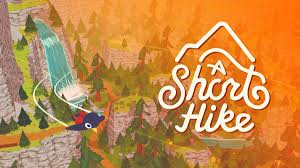
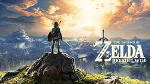
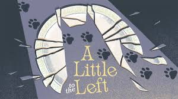

Stardew Valley

Description: Stardew Valley is an indie title, that focuses on the player taking over their grandfather's farm outside of the city. The player can farm, raise animals, make connections with the local npc's, as well as combat monsters in the mines.
Animal Crossing: New Horizons
Description: Nintendo's 6th title within the Animal Crossing Franchise. Move to a deserted Island, and build a life for yourself. Decorate the island, make friends with the villagers, complete your 'critterpedia', and donate items to the museum and more!
Moonstone Island
Description: As a young alchemist you need to complete a year of training away from home. Explore the random generated island, collect spirits and build relationships with the npc's.
My Time at Portia
Description: Set in a world where civilization has been destroyed, humans have emerged from underground and began to rebuild. As a desendent of a famous builder, you inherit your fathers workshop. Engage with the npcs, craft and explore the state of Portia!
A Short Hike
Description: As the name suggests you are going on a hike! Climb and soar through the peaceful mountainside landscapes of Hawk Peak Provincal Park. Explore the world and meet with other hikers all the while discovering hidden treasures.
Fire Emblem: Three Houses
Description: Set on the continent of Fódlan, the territory is divded by three ruling powers. The nations are connected through the Garreg Mach Monastery. Select a house to play with and explore the monastery, improve your skills, and build relationships with the npcs.
Zelda: Breath of the Wild
Description: Set at the end of the Zelda timeline for the franchise, you play as Link who has amnesia from previous events. Save princess Zelda and prevent Calamity Ganon from destroying Hyrule. The game offers an open world to explore at your own pace. You can take on enemies or even just wander around to collect new items and cook!
Disney Dreamlight Valley
Description: Return to the valley and help your favourite Disney characters tackle the forgetting. Explore, make new friendships, fish, collect items, and decorate!
Bear and Breakfast
Description: Play as Hank, a bear who takes it upon himself to explore being an entrepreneur of running a bed and breakfast for humans. Unlock different areas of the map, decorate the rooms you've build in various building and expand the bed and breakfast business you've created.
Fields of Mistria
Description: Assist the town of Mistria in repairing following an earthquake. You are offered a homestead in exchange for help with fixing the town. Meet the towns people, explore mistria and engage with magic.
A Little to the Left
Description: Enter the cozy world of A Little to the Left. Organize household items while avoiding a mischevious cat. Enjoy the satsifying stacking and sorting of this game.
Unpacking
Description: Follow a young woman as she grows up from a young girl to adulthood. Unpack her belongings and learn about her life. If you enjoy organizing and a calm environment you will enjoy this simple game.